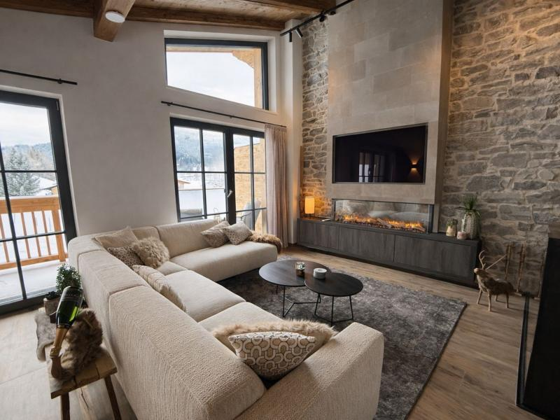
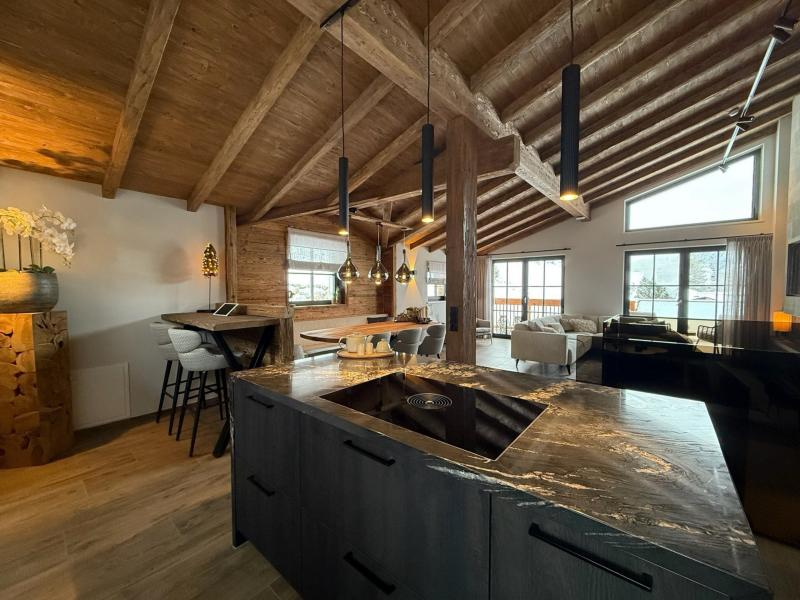
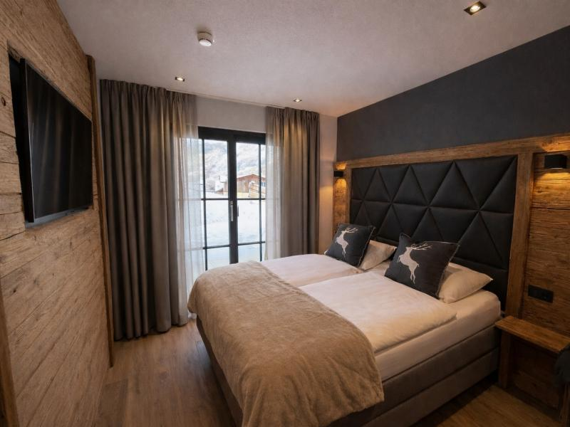
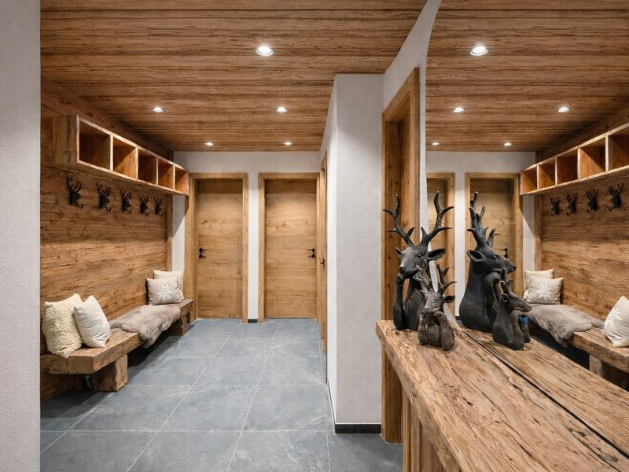
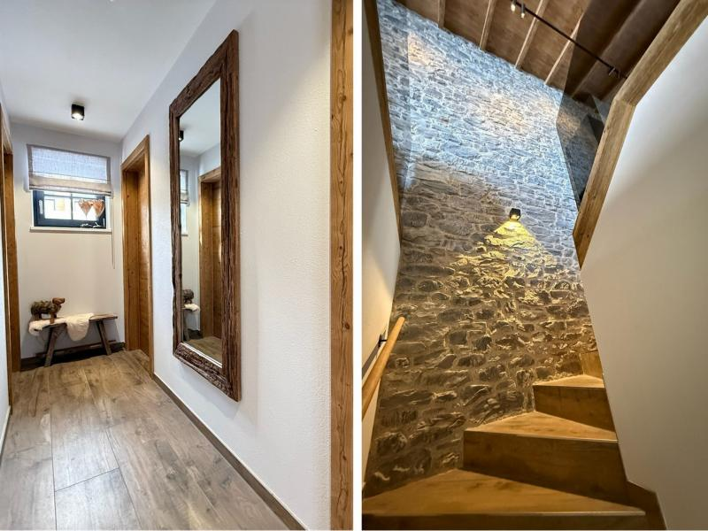
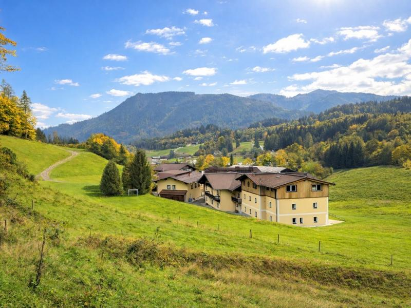
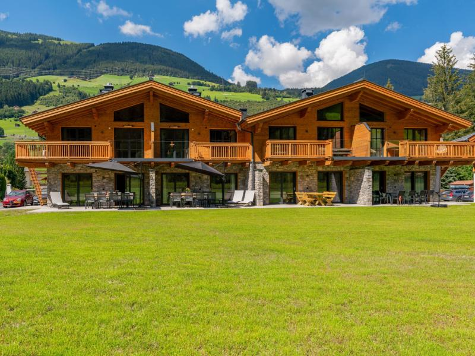

Wonen & koken
Ruime woonkamer met open haard, panoramische ramen en een volledig uitgeruste keuken met keukeneiland.

EBEN IM PONGAU · SALZBURGERLAND
Een bijzondere plek in de Oostenrijkse Alpen.
Ontdek de lodge01 / Der Lodge
Warm alpien wonen, de vrijheid van de bergen en alle ruimte om samen te zijn. In Gipfel Lodge komen sfeer en comfort vanzelf samen.



Een plek voor elkaar
Gipfel Lodge ligt in Eben im Pongau, midden in het Oostenrijkse Salzburgerland. De lichte woonkamer met panoramische ramen en een sfeervolle open haard vormt het hart van de lodge.
Met vier slaapkamers, drie badkamers en een volledig uitgeruste keuken geniet je hier van een ontspannen verblijf met familie en vrienden.
Gipfel Lodge in beeld
Van het eerste ochtendlicht tot ontspannen avonden. Ontdek de verschillende plekken die Gipfel Lodge bijzonder maken.












02 / Wellness
Wellness, gewoon in je eigen lodge.
Na een dag in de bergen wacht de privé sauna in huis. Kom tot rust op je eigen tempo, zonder de lodge te verlaten.
Drie badkamers bieden extra comfort en privacy voor het hele gezelschap.
Rust & ontspanning03 / Uitrusting
Van samen koken aan het keukeneiland tot ontspannen bij het haardvuur: de lodge is ingericht voor een zorgeloos verblijf.
Ruime woonkamer met open haard, panoramische ramen en een volledig uitgeruste keuken met keukeneiland.
Vier slaapkamers en drie badkamers voor comfortabel samenzijn.
55 m² terras en balkon, en een tuin van 115 m².
Twee overdekte parkeerplekken aan huis, een ruime entree en een schoenverwarmer.
04 / Plattegrond
Met 135 m² woonruimte, vier slaapkamers en drie badkamers is er ruimte voor een ontspannen verblijf met familie en vrienden.
Wil je weten hoe de ruimtes precies zijn ingedeeld? Vraag ons gerust om plattegrondinformatie.
Vraag de plattegrond aanBeleef Gipfel Lodge
Ontdek de rust, het comfort en de vrijheid van een bijzonder verblijf in Oostenrijk.
Beschikbaarheid aanvragen